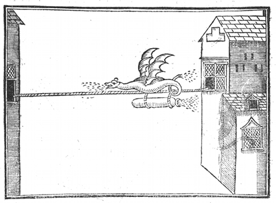

Tuesday, November the 29th, 2011
back to: title, date or indexes
In a spare moment, you might want to make a flying dragon. Be warned, however, that its designer, John Bate, admitted that “it is somewhat troublesome to compose”.

Further excitements from The Mysteries Of Nature And Art (1634) at The Public Domain Review.